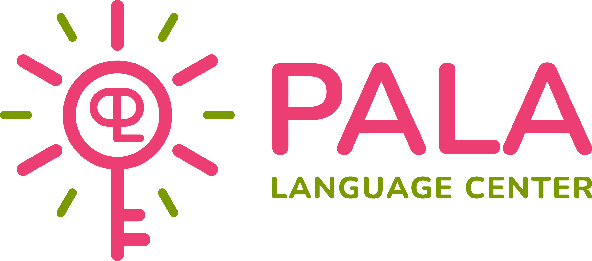

Hệ thống đánh giá
Bài Kiểm Tra
Năng Lực Đầu Vào
Vui lòng chọn bài kiểm tra phù hợp với độ tuổi và chương trình học của bạn để bắt đầu.

PALACENTRE'">Vui lòng chọn bài kiểm tra phù hợp với độ tuổi và chương trình học của bạn để bắt đầu.